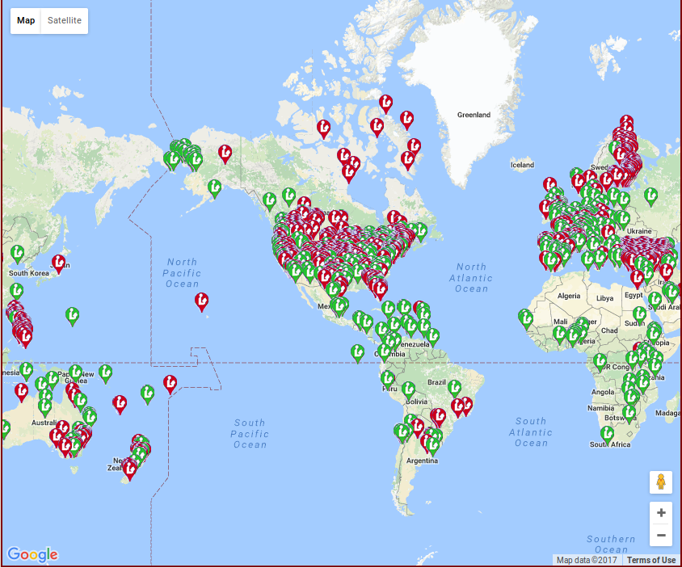

It's all about the People
Brief history of Koha
- Started in 1999 as a y2k fix
- Went live January 3 2000
- Released June 2000
- Over 15,000 libraries using Koha (that we know of)
- “I generally agree with Catalyst that the number of implementations around the world is something in the 15,000 range. I often mention in my talks that it is likely that Koha is the most implemented ILS globally.” - Marshall Breeding
What is Koha?
-
12,381,548 lines of code (including translations)
-
1000s of features
-
0ver 15,000 installs
-
50+ support companies
-
... But more importantly
A community
CC-BY-SA Kristina Hoeppner
Some of the Koha Installs

Academic Libraries and Koha

Kohacon
CC-BY-SA Tomas Cohen Arazi
Bugzilla

Stories
CC-BY-SA Kristina Hoeppner
←
→
/
#